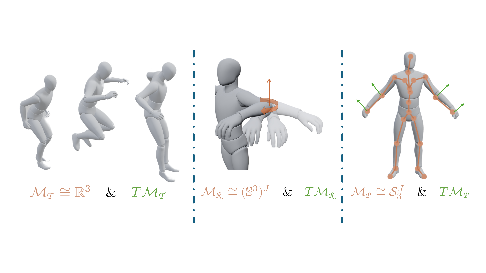
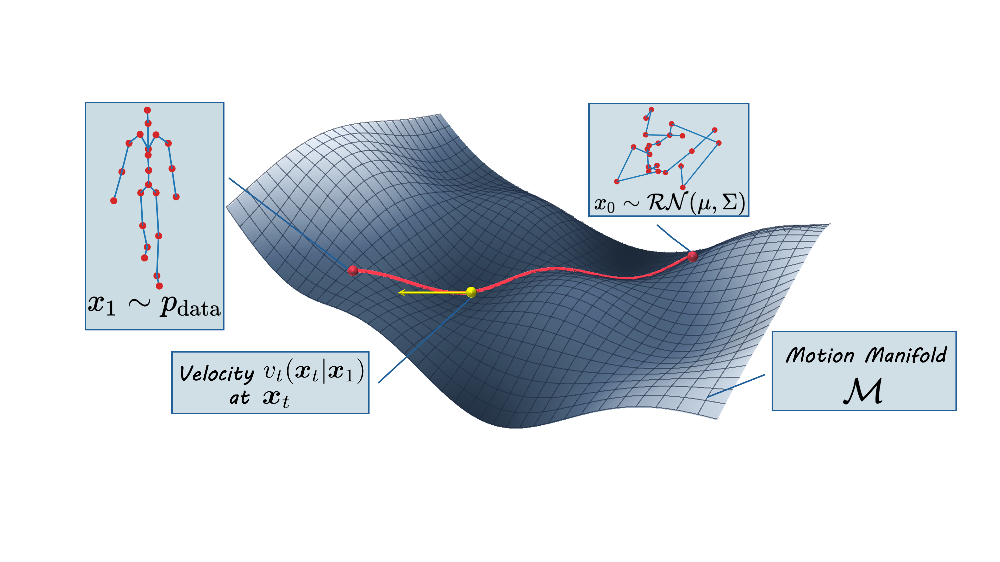
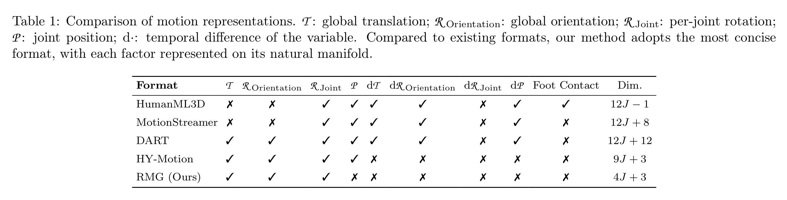
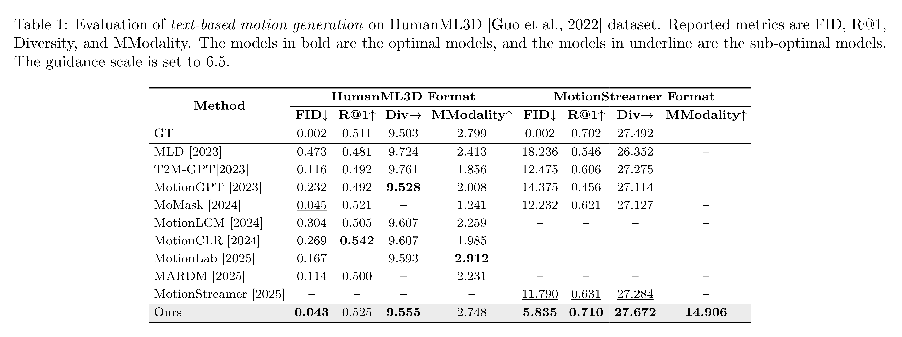
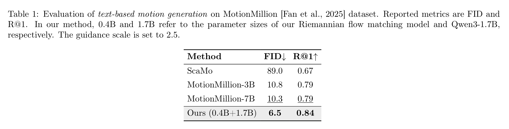

Human motion generation is often learned in Euclidean spaces, although valid motions follow structured non-Euclidean geometry. We present , a unified framework that represents motion on a product manifold and learns dynamics via Riemannian flow matching. RMG factorizes motion into several manifold factors, yielding a scale-free representation with intrinsic normalization, and uses geodesic interpolation, tangent-space supervision, and manifold-preserving ODE integration for training and sampling. On HumanML3D, RMG achieves state-of-the-art FID in the HumanML3D format (0.043) and ranks first on all reported metrics under the MotionStreamer format. On MotionMillion, it also surpasses strong baselines (FID 5.6, R@1 0.86). Ablations show that the compact \(\mathcal{T}+\mathcal{R}\) (translation + rotations) representation is the most stable and effective, highlighting geometry-aware modeling as a practical and scalable route to high-fidelity motion generation.



@misc{rmg,
title={Riemannian Motion Generation: A Unified Framework for Human Motion Representation and Generation via Riemannian Flow Matching},
author={Fangran Miao and Jian Huang and Ting Li},
year={2026},
eprint={2603.15016},
archivePrefix={arXiv},
primaryClass={cs.CV},
url={https://arxiv.org/abs/2603.15016},
}